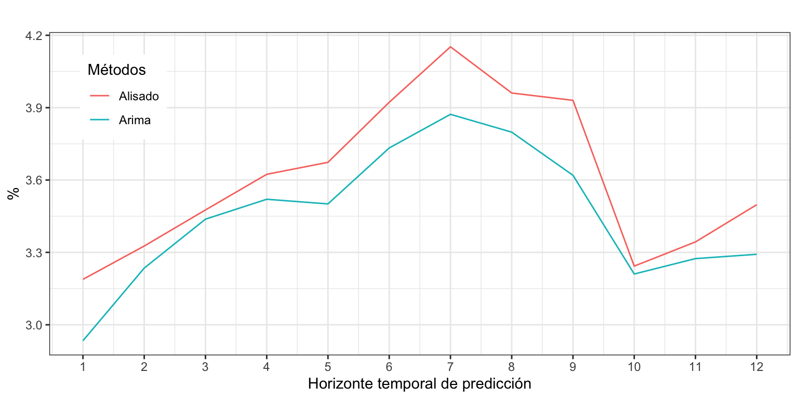

Iván Arribas (Depto. Análisis Económico. Universitat de València)
1 Introducción
Consideremos la serie temporal correspondiente al número de defunciones causadas por enfermedades cerebrovasculares, Esta serie está disponible en el Instituto Nacional de Estadística desde enero de 1980 hasta diciembre de 2024, un total de 45 años o 540 meses.
En el análisis descriptivo vimos que la descomposición revelaba la presencia de varios valores atípicos concentrados al inicio de la serie. Por este motivo, para su análisis por modelos Arima vamos a recortar la serie, que empezará el enero de 1990 (véase Figura 1).
También hemos visto que para alcanzar la estacionariedad y verificar la hipótesis de ergodicidad es necesario diferenciar la serie tanto en la parte regular como estacional y decidimos usar la transformación logarítmica para linealizar la serie y ganar en interpretabilidad.
Figura 1: Defunciones causadas por enfermedades cerebrovasculares
2 Identificación
Vamos a identificar los valores de \(p\), \(q\), \(P\) y \(Q\). Para ello, analizaremos la FAC y la FACP, y solicitaremos con auto.arima y seas una identificación automática.
ggtsdisplay(diff(diff(log(DefEnfCer), lag =12)), lag =48)
Figura 2: Defunciones anuales por enfermedades cerebrovasculares, FAC y FACP de la serie transformada
En la parte regular, la FAC muestra que la primera autocorrelación está por encima del IC95 y en la FACP se observa decrecimiento. En la parte estacional, la FAC muestra una autocorrelación significativa en el orden 12 y la FACP muestra decrecimiento. Así, podemos identificar el proceso como \(log(Def_t) \sim ARIMA_{12}(0,1,1)(0,1,1)\).
Veamos ahora auto.arima, al que incluiremos variables ficticias para los cuatro valores atípicos ya identificados cuando aplicamos Alisado exponencial: febrero de 1999, mayo de 2001, junio de 2003 y febrero de 2012.
La función auto.arima identifica un complejo proceso \(ARIMA_{12}(1,1,2)(1,1,1)\). Además, varios coeficientes estimados no parecen ser significativos (ar1 y ma2) y si los eliminamos, tendríamos un modelo muy parecido al de las aerolíneas.
Por otro lado, la función seas identifica un proceso \(ARIMA_{12}(1,0,1)(1,1,1)\). El resultado muestra la conveniencia de la transformación logarítmica y dos intervenciones en febrero de 1999 y 2012.
Vamos a descartar ambas identificaciones y considerar el modelo de las aerolíneas. El AICc para este modelo es solo algo superior al de los modelos sugeridos por auto.arima o seas. Es decir, \(\log(Def_t) \sim ARIMA_{12}(0, 1, 1)(0, 1, 1) + AI\) donde \(AI\) recoge las cuatro variables ficticias que afectan un único mes.
3 Estimación
La siguiente salida muestra el modelo estimado y la Figura 3 permite analizar la presencia de más valores extremos.
Se observan dos valores claramente atípicos en agosto de 2003 y febrero de 2015. Además, hay otros candidatos a valor extremo, entre los que destacan enero de 2005 y 2015, y julio de 2022. Procederemos a incluirlos en el modelo.
Si comparamos los coeficientes con sus errores estándar, observamos que, con seguridad, las variables de intervención incluidas son significativas.
El análisis gráfico del residuo indica que aún hay candidatos a valores atípicos (véase Figura 4). Sin embargo, vamos a dar por concluido este proceso.
Tres de los valores atípicos corresponden al mes de febrero y sus coeficientes estimados toman valores parecidos. También hay dos meses de enero atípicos con similar efecto. Vamos a asumir que la causa que hay detrás del valor anómalo en los meses de febrero es la misma, posiblemente un invierno más frío de lo usual. Lo mismo asumiremos para los valores atípicos en enero. Esto nos permite agrupar variables de intervención y simplificar el modelo.
Analizando los criterios de bondad de ajuste se tiene que el error medio (ME), igual a -7.07, defunciones es prácticamente cero por lo que no parece que haya sesgo en las predicciones; en media nos equivocamos en 127 defunciones (RMSE); y el error porcentual medio es 3.3%, bajo. Sin embargo, los intervalos de las predicciones no están correctamente calculados.
accuracy(DefEnfCerArima3)
ME RMSE MAE MPE MAPE MASE ACF1
Training set -7.07 126.87 92.58 -0.33 3.33 0.58 0.15
Incorrelación, Homocedasticidad y Normalidad
Veamos ahora si el residuo es ruido blanco.
error <-residuals(DefEnfCerArima3)Box.test(error, lag =2,type ="Ljung-Box")
Jarque Bera Test
data: error
X-squared = 0.89314, df = 2, p-value = 0.6398
Los primeros valores de autocorrelación indican que el error no es incorrelado. Esto puede deberse a un análisis de la intervención incompleto o a una identificación incorrecta. Por otro lado, el error es homocedástico y segue una distribución normal.
5 Ecuación del modelo identificado
El modelo estimado es el de las aerolíneas con intervención: \[(1-L)(1-L^{12})log(Def_t) =(1+\theta_1 L)(1 + \theta_{12}L^{12})\varepsilon_t +AI.\] Como la interpretación de la parte estructural del modelo es ya conocida, vamos a centrar la interpretación en la intervención:
En los dos meses de enero atípicos, posiblemente por ser más frios, la defunciones fueron 14.8% mayores que las observadas en otros meses de enero.
De la misma forma, en los tres meses de febrero atípicos, la defunciones fueron un 21.6% mayores que las observadas en otros meses de febrero.
En mayo de 2001 hubo un aumento en las defunciones del 11.1% respecto a lo esperado; en junio de 2003 del 16.8%; en agosto de 2003 del 18.0%; y en julio de 2022 del 15.2%.
6 Predicción de las defunciones por enfermedad cerebrovascular
Una vez dado por válido el modelo, podemos pasar a realizar predicciones para los próximos años (véase Figura 5). Como la variables de intervención no son efectos calendario, sus valores previstos serán cero. Esto implica, por ejemplo, que estamos asumiendo que la temperatura en los eneros y febreros de los próximos años no será inusualmente baja.
Figura 5: Defunciones (1990-2024) y predicción (2025-2029)
A partir de 2026 se espera que el número anual de defunciones por enfermedad cerebrovascular caiga por debajo de los 22,000 casos.
aggregate(pDefEnfCerArima3$mean, FUN = sum)
Time Series:
Start = 2025
End = 2029
Frequency = 1
[1] 22318.33 21831.48 21355.26 20889.42 20433.75
7 Comparación con Alisado Exponencial
El método de Alisado exponencial, aplicado sobre el logaritmo de las defunciones identifica un proceso (A,A,A) con \(\alpha=0.091\), \(\beta = 0\) y \(\gamma = 0.002\). La raíz del error cuadrático medio (RMSE) es de 150 defunciones y el error porcentual (MAPE) del 3.7%. Estos valores son superiores a los obtenidos con el modelo Arima (127 defunciones y 3.3%, respectivamente).
summary(ets(DefEnfCer, lambda =0))
ETS(A,A,A)
Call:
ets(y = DefEnfCer, lambda = 0)
Box-Cox transformation: lambda= 0
Smoothing parameters:
alpha = 0.091
beta = 1e-04
gamma = 0.0016
Initial states:
l = 8.1772
b = -0.0015
s = 0.1196 -0.0045 -0.0452 -0.1461 -0.0811 -0.0507
-0.102 -0.0387 -0.0276 0.0912 0.0777 0.2073
sigma: 0.0508
AIC AICc BIC
52.04196 53.56435 120.72629
Training set error measures:
ME RMSE MAE MPE MAPE MASE ACF1
Training set 5.313471 149.5784 103.8437 -0.1411164 3.662229 0.6556417 0.2482545
Vamos a determinar si la aplicación de modelos Arima mejora la calidad de las predicciones lo suficiente como para justificar su uso –frente a los métodos de Alisado, mucho más sencillos. Para ello, aplicaremos la metodología de origen de predicción móvil para estimar la capacidad predictiva del modelo Arima y compararla con el modelo de Alisado.
k <-120h <-12T <-length(DefEnfCer) s <- T - k - h mapeArima <-matrix(NA, s +1, h)mapeAlisado <-matrix(NA, s +1, h)for (i in0:s) { train.set <-subset(DefEnfCer, start = i +1, end = i + k) test.set <-subset(DefEnfCer, start = i + k +1, end = i + k + h) fit <-Arima(train.set, order =c(0, 1, 1),seasonal =c(0, 1, 1), lambda =0) fcast <-forecast(fit, h = h) mapeArima[i +1,] <-100*abs(test.set - fcast$mean)/test.set fit <-ets(train.set, lambda =0, model ="AAA", damped =FALSE) fcast<-forecast(fit, h = h) mapeAlisado[i +1,] <-100*abs(test.set - fcast$mean)/test.set}
Calculamos los errores medianos para eliminar el impacto de los meses atípicos sobre la precisión en las predicciones.
errorArima <-apply(mapeArima, MARGIN =2, FUN = median)errorArima
datos <-data.frame(factor =c(rep(c("Arima", "Alisado"), each =12)),x =c(1:12,1:12),y =c(errorArima, errorAlisado))ggplot(datos, aes(x = x, y = y, colour= factor)) +geom_line() +labs(title ="", x ="Horizonte temporal de predicción", y ="%") +scale_x_continuous(breaks=1:12) +labs(colour ="Métodos") +theme(legend.position=c(0.1,0.8))

Figura 6: Error de predicción (MAPE) según horizonte temporal
La Figura 6 indica que Arima es, en general, algo superior a Alisado en calidad de predicciones. Sin embargo, la diferencia máxima en la precisión de las previsiones es de 0.3 p.p. y la media es de 0.12 p.p. Por tanto, la mejora en la precisión no parece justificar la complejidad de los modelos Arima frente a la sencillez de los modelos de Alisado.
La ventaja de Arima reside en su capacidad para estimar el efecto de inviernos más crudos sobre las defunciones por enfermedad cerebrovascular y mejorar las predicciones en estos meses.